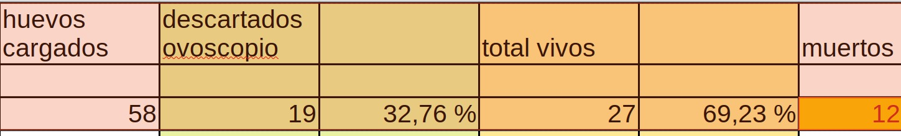

MANEJO DE REPRODUCTORES, huevos fértiles e incubación:
Gallinero y ambiente:
-
¿Cuál es la relación macho:hembra en su lote reproductor?
-
¿Qué edad tienen las aves reproductoras?
-
¿Cómo controla la temperatura y ventilación en el gallinero? (Están muy encerradas? O a pleno sol)
-
¿Cuáles son las instalaciones para que pongan huevos? ¿Son limpias y ordenadas?
-
¿Con qué frecuencia limpia los gallineros?
Alimentación:
- ¿Qué tipo de dieta suministra a los reproductores? ¿Cómo asegura el aporte adecuado de vitaminas y minerales (Calcio sobre todo)? ¿Están demasiado gordas o demasiado flacas?
Sanidad:
-
¿Ha observado signos de enfermedad en el lote reproductor?
-
¿Realiza tratamientos contra parásitos internos/externos?
RECOLECCIÓN Y MANEJO DE HUEVOS
Recolección:
-
¿Con qué frecuencia recolecta los huevos?
-
¿Qué porcentaje aproximado de huevos encuentra en el piso?
Almacenamiento pre-incubación:
-
¿Cuánto tiempo almacena los huevos antes de incubarlos?
-
¿A qué temperatura y humedad los almacena?
-
¿Cómo posiciona los huevos durante el almacenamiento?
-
¿Como los transporta?
Selección:
-
¿Qué criterios utiliza para seleccionar huevos fértiles?
-
¿Descarta huevos con formas irregulares, grietas o suciedad?
-
¿Qué porcentaje de huevos suele descartar antes de incubar?
INCUBACIÓN:
Parámetros de incubación:
-
¿Hubo problemas de temperatura en la incubadora?
-
¿Hubo problemas de humedad durante las diferentes etapas?
-
¿Hubo problemas con el ventilador?
-
¿Hubo problemas con la rotación?
-
¿Realiza ovoscopía? ¿Que día?
-
¿Hubo cortes de luz?
Transferencia a nacedora:
- ¿En qué día trasladó los huevos a la nacedora?
Nacimiento:
-
¿Aumentó la humedad durante el nacimiento?
-
¿Cuál es la duración promedio del proceso de eclosión (desde que nace el primero hasta el último que espera)?
-
¿ A los cuantos días comenzó y terminó el nacimiento?
EVALUACIÓN POST-NACIMIENTO
Resultados:
-
¿Cuál es su porcentaje de nacimientos sobre huevos fértiles?
-
¿Cuál es su tasa de mortalidad embrionaria temprana, media y tardía? ( O sea, hay huevos que no nacieron y estaban muy formados o poco formados)
-
¿Qué porcentaje de pollitos nacen con problemas o malformaciones?
Análisis:
- ¿Realiza necropsia de embriones no eclosionados? ( Rompe los huevos que no nacieron?)
Calidad de los pollitos:
-
¿Cómo evalúa la calidad de los pollitos nacidos?
-
¿Observa signos de deshidratación o problemas en las patas al poco tiempo de nacimiento?
-
¿Se mueren muchos pollitos en las primeras horas?
Ejemplo práctico:

-
Si ven esta tablita podemos suponer (porque es difícil de comprobar) que:
-
Si el porcentaje de huevos descartados por ovoscopio es mayor al 20% (en este caso más del 30) tenemos que pensar que los 19 huevos descartados por ovoscopio no estaban fertilizados…
¿ Por qué? (Es una pregunta que debería pensar el dueñ@ del gallinero primero.. después los que seleccionaron los huevos).
- El nacimiento fue, dentro de todo,normal (ni excelente ni malo). Casi el 70% de eclosión sobre los huevos que pasaron a nacedora...
¿Qué pasó con los 12 huevos que no nacieron?
- 5 no tenían ningún desarrollo
-
1 podrido mal. (¿le explotó a Darío en la cara?) (también debería haberse descartado por ovoscopio).. Estos primeros 6, podrían haber sido descartados por ovoscopio; y eso aumentaría al 81 % porcentaje de eclosión).
-
4 embriones muy formados (grandes) pero solo 2 rompieron cáscara y no pudieron nacer (Falta de rotación, o falta de humedad o la misma naturaleza)
- 2 con el embrión pequeño (Falta de calor o problema del huevo)
Conclusión : Hay que revisar el proceso de los huevos fértiles!!!